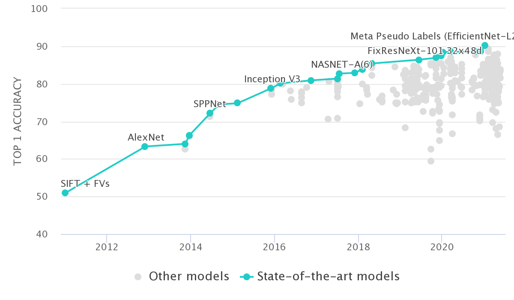
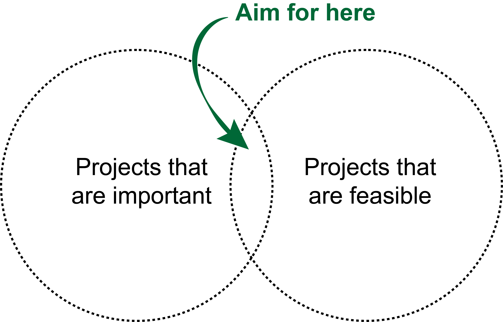

flowchart LR A[Identify problem] --> B[Consider\nevaluation\nstrategy] B --> C[Realize no\nstrategy exists] C --> D[Abandon\nproject]
Kieran R Campbell
June 1, 2023
Teng Gao recently published a blog post called Principles for new method development summarizing some guidelines on how to approach the creation and evaluation of new computational biology methods. Given the proliferation of research in this area, I think this is a really important topic and worth diving deep on. What makes a “good” methods development research project? How do we know it’s “good”? Much of this is based on mistakes I have made in the past.
A seemingly common strategy when starting a new computational genomics methods problem is to
I have \(n=1\) concrete evidence for this but suspect it’s very common. For example, when single cell RNA-sequencing methods were created, there was a rush to develop specific methods for differential expression (comparing if the expression of gene differs between two conditions) rather than relying on existing methods for bulk data. However, later benchmarking papers hinted that bulk differential expression tools performed best on average. In other words, make sure there is a problem to be solved rather than creating a solution first or imagining there is a problem without confirming. A really good place to start with this is via benchmarking/testing existing methods and working out where they fail/perform poorly. It’s in those gaps the potential for important new methods lies.
A related issue is to look an existing method, think
this doesn’t achieve 100% accuracy
(however you choose to define accuracy), then think
I bet I can come up with a better method
There are some merits to this approach. For example, in the field of computer vision circa 2012, the top-1 accuracy on ImageNet using hand-engineered features was ~50%. The next year, along came deep learning and raised this to ~65%, a relative increase of ~30% which is mindblowing1:

The catch is, this is happens rarely in applied genomics research. It’s much more likely that after extensive methods development and (hyper-)parameter tuning, we see a 2-5% increase2 in whatever score is used to benchmark the method.
The issue here is: is any new biology discovered as a result of improving a score by 2-5%? I suspect the answer is frequently “no”, and a lot of frustration of wet-lab biologists with the computational methods community is chasing such benchmarks rather than trying to uncover new biology / insights from the data. I also suspect that 30% bump in accuracy on ImageNet has laid the foundation for thinking
If only I could create the right (deep learning) method, I’ll solve this!
from many researchers (including myself), which in reality it’s uncommon for this to throw the doors open to new insights.
So what’s the alternative? The alternative is to take a fresh perspective of the data in some that discovers something new, which is hard. One nice example of this work on RNA velocity, which took existing single-cell RNA-seq data, but realized that by quantifying spliced vs. unspliced read counts with a new model (the fresh perspective) and in doing so could predict3 the future state of cells (the something new). But the fact remains that such new approaches are hard and consequently rare, but a good angle may be to go first really deep on the biology then try to align that with what’s possible from the data.
After successfully identifying a problem, the next important yet still hard question is how do you know when you’ve solved the problem? In a supervised learning setup this is somewhat straightforward: a successful method will improve the accuracy on held out test data4.
However, in computational genomics it’s often hard to apply such a concept, since (i) labelled (ground truth data) may be expensive to obtain and/or non existent, and (ii) many of the problems are unsupervised (e.g. clustering or dimensionality reduction), so there is no such thing as a “ground truth”.
Given this, how do we say if one method is “better” than another? Some common approaches are
The crucial consideration isn’t the exact evaluation strategy used but to have one in place before you start. It’s much better to have
flowchart LR A[Identify problem] --> B[Consider\nevaluation\nstrategy] B --> C[Realize no\nstrategy exists] C --> D[Abandon\nproject]
than
flowchart LR A[Identify problem] --> B[Develop new\n method] B --> C[Consider\nevaluation\nstrategy] C --> D[Realize no\nstrategy exists] C --> E[Realize new\nmethod is inferior\nto existing] D & E --> F[Abandon\nproject]
The last consideration is probably the most obvious: aim for projects that are both important and feasible.
What is important? Projects that will deliver some new biological insight, unblock some impediment to progress in a sub-field, or (most importantly of all) deliver something back to the clinic that will improve patient outcomes.
What is feasible? Projects where the data to answer the question exist, to which you have access, and/or for which you have collaborators able to validate any predictions you make.
The problem is, the intersection of the two is often small:

This often turns into a chicken and egg problem: you’ve identified \(X\) as a really crucial issue in the field that needs solved urgently, but you only have the data/collaborators/skills to solve \(Y\). Consequently, iteration is needed to refine the project until you’ve identified a related problem that is still worthwhile to solve but actually feasible. This may take the form of limiting project scope (“let’s do a pan-cancer analysis” becomes “let’s do the analysis in the cancer type we have data for”) or settling on predicting a surrogate of what you actually want (e.g. predicting treatment response becomes predicting known treatment response signatures). What’s important is to consider this up-front and not get stuck on the not feasible / not important trap5.
This is a simplified re-telling but true to a first approximation.↩︎
This is an educated guess, but I suspect after we account for over-fitting this acts as an upper bound.↩︎
To a first approximation↩︎
What’s important is also highly subjective and not always obvious until (many decades) after the fact.↩︎